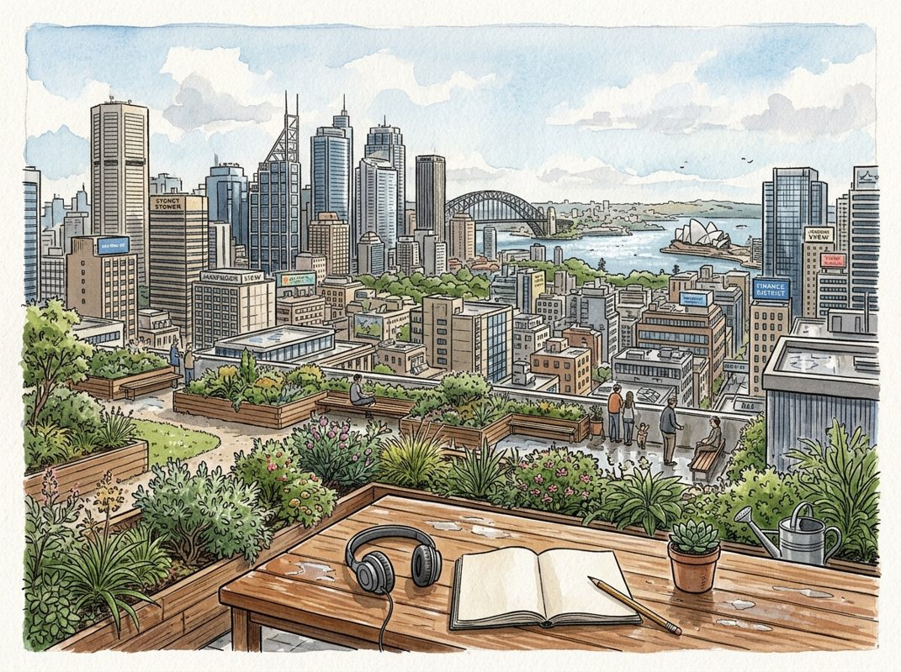

11/5

播客简报 2026-11-05
今日更新
#439 How Eiichiro Oda Works
来源：Founders
原链接：
状态：已读完整音频 transcript
这期播客深入剖析了《海贼王》作者尾田荣一郎极致的工作哲学和生活方式，揭示了其创作世界级IP背后的非人毅力、独特思维和对作品的绝对掌控，适合所有对极致创造力、创业精神和个人成就感兴趣的听众。
- 极致的创作源泉：从童年梦想与差异化策略出发：尾田荣一郎四岁立志成为漫画家，22岁开始创作《海贼王》，至今已51岁，作品仍在连载。他创作的初衷是画自己小时候想读的漫画，而非迎合市场。在当时“英雄打败恶魔”的故事泛滥时，他选择“做一些不同的事情”，这与彼得·蒂尔《从0到1》中强调的“差异化是核心”不谋而合。他坚信，如果日本人喜欢，全世界的人也会喜欢，这体现了人类欲望的普适性，与皮克斯的埃德·卡特穆尔和广告大师大卫·奥格尔维的理念相似。尾田不试图取悦所有人，而是专注于为“15岁的自己”创作，这种以用户为中心、甚至以“自己”为中心的理念，是其作品能引起全球共鸣的关键。
- 非人的工作强度与对作品的绝对掌控：尾田的工作强度令人咋舌。他曾长期保持凌晨2点睡、5点起的作息，每周工作七天，只在交稿后允许自己多睡一会儿。年轻时甚至每48小时只睡2小时，通过15分钟小憩维持。他认为，只有在身心达到极限时，才能产生真正的新想法。这种极致的投入，源于他对作品的完美主义和“反授权”倾向。他坚持尽可能少的人接触作品，亲自绘制所有动态元素（人物、烟雾、海浪等），因为多人参与会导致不满意。这与史蒂夫·乔布斯“工作质量与参与人数成反比”的观点，以及Shopify创始人托比·卢克“最佳团队规模是1人”的理念高度一致。
- 永不枯竭的想象力与“先知结局，再即兴创作”：尾田的想象力极其丰富，他将生活中的一切都与漫画创作联系起来，随身携带笔记本记录想法。他通过想象“如果这样会很酷”来构思，例如路飞橡胶身体的灵感来源于“希望手臂能伸长够到饮料”。尽管他有海量的创意储备，但每周的截稿压力让他必须在疲惫中思考，才能激发新灵感。他只在脑海中设定了《海贼王》的结局，而通往结局的故事情节和弧线则是在创作过程中即兴编织。这种“对愿景坚定不移，对细节灵活变通”的策略，与亚马逊的杰夫·贝佐斯和亨利·福特的管理哲学异曲同工，让他能在保持核心主线的同时，不断注入新鲜元素。
- 对卓越的执着：拒绝妥协与自我驱动：尾田对作品的卓越追求近乎偏执。他曾告诉新编辑要“为《海贼王》而死”，要求团队展现出与他同等的承诺。他欢迎编辑的批评，曾因被指出女性角色不够吸引人而整夜练习，甚至逐帧研究迪士尼动画。他拒绝接受“足够好”的妥协，认为只有在截稿前最后一刻仍在思考和修改，才能确保作品达到最佳状态。他承认自己无法高效工作，也无法系统化地创作，因为他的个性不允许他停止寻找更好的想法。这种“宁愿选择创作上的兴奋，也不愿选择生活上的轻松”的态度，是其作品能够持续保持高水准的核心原因。
- 生活与工作的边界模糊：一个冒险家的“囚徒”：尾田的生活空间也充满了奇思妙想，像一个游乐园，里面有街机、迷你火车、巨型长颈鹿等。他甚至故意向年轻漫画家展示成功创作者的财富，以激励他们。他将绘制漫画视为“消遣而非压力”，尽管这占据了他几乎全部的成年生活。这种将工作视为乐趣的深层满足感，让他即使在医院也要带着绘图工具，不画画就会焦虑。他一生都在创作一个关于自由和冒险的故事，但自己的生活却被每周的截稿日严格限制，形成了一种独特的悖论。他与编辑长时间电话讨论剧情，甚至让编辑产生“幻觉震动”，都体现了他对作品的全身心投入。
S10E1: How Marc Stad Obtained the Unobtainable
来源：View From The Top
原链接：
状态：已读完整音频 transcript
这期播客深入探讨了Dragoneer Investment Group创始人Marc Stad从贫寒出身到全球顶尖科技投资人的非凡历程，揭示了他如何通过不懈的努力、独特的投资哲学和对机遇的敏锐洞察力，实现“获取不可得之物”的职业飞跃。它适合所有渴望在投资、创业或任何领域取得突破，并寻求职业发展和人生导师指引的中文读者。
- 从零开始的非凡崛起：Marc Stad，Dragoneer Investment Group的创始人兼管理合伙人，是全球顶尖的科技投资者之一。他的公司Dragoneer是一家“跨界基金”，同时投资公开市场和私募股权，尤其擅长IPO前后的科技公司。Stad的投资理念是长期持有，以五年甚至更长的时间维度看待回报。令人惊讶的是，他是家族中第一个高中毕业的人，这为他的人生和职业生涯奠定了“创造机遇”的主题。他最近还收购了一支NBA球队，但其成功的背后是鲜为人知的奋斗史。
- 斯坦福商学院的传奇实习：Stad在斯坦福商学院（GSB）的实习经历堪称传奇。他主动出击，通过不懈的邮件和电话攻势，最终获得了Investment Group of Santa Barbara (IGSB)的实习机会。这份实习的特别之处在于，IGSB给了他100万美元，让他自由投资公开市场，并承诺分享一半利润。在2007年IPO市场火热的夏天，Stad将全部资金投入到了一家名为Mercato Libre（美客多）的公司。尽管合伙人Tim提醒他要分散投资，但Stad坚信这是个“好主意”，最终在短短三天内将100万美元变成了400万美元，实现了惊人的回报，也让他从负资产一跃成为富人。
- 贫寒出身与早期职业启蒙：Stad的成长环境与投资界常见的背景大相径庭，他的父母和四个哥哥姐姐都未完成高中学业。他并非从小就立志成为投资者，而是“走一步看一步”，努力生存。凭借优异的学业表现，他考入哈佛大学，最初梦想从政。然而，在为时任花旗集团CEO的鲍勃·鲁宾（Bob Rubin）撰写演讲稿后，鲁宾建议他先去赚钱，了解经济和商业运作，而不是22岁就在华盛顿当穷小子。这番话改变了Stad的职业轨迹，他随后进入所罗门美邦（Solomon Smith Barney）和麦肯锡（McKinsey），为未来的投资生涯奠定了基础。
- 导师的力量与“非目标性”关系：Stad强调导师在职业发展中的关键作用，尤其对于没有家族背景的人。他认为导师关系必须是“共生”的，而非单向索取或出于义务。他以与TPG创始人大卫·邦德曼（David Bonderman）的经历为例：Stad在一次偶然机会下主动请缨为邦德曼处理一桩酒店收购案，尽管他当时对酒店一无所知。经过一年的努力，他成功完成了交易，并拒绝了邦德曼的酬劳，只要求一张“欠条”。多年后，这张“欠条”转化为邦德曼对Dragoneer的500万美元投资，开启了两人长达20年的亦师亦友的合作关系。
- 突破规则，进入顶尖PE：Stad的职业生涯充满了“将不可能性变为可能”的例子。在麦肯锡工作期间，他渴望进入私募股权（PE）行业，但当时顶尖PE公司（如黑石、TPG）通常只招聘来自高盛或摩根士丹利等投行背景的人。他收到了25封拒信，但并未放弃。他选择先进入一家中型PE公司积累经验，两年后，他直接闯入TPG办公室，向招聘负责人Tom Reinhardt毛遂自荐，并承诺自己的建模能力不输任何人。最终，他获得了面试机会，并成功进入TPG，再次证明了打破常规、主动争取的重要性。
Priya Parker: Fight With Your Friends! (Part 2)
来源：What now with Trevor Noah
状态：已读完整音频 transcript
本期播客深入探讨了冲突在人际关系和社群发展中的核心作用，挑战了我们对冲突的传统负面认知。它揭示了避免冲突的代价，并提供了理解和驾驭冲突的多元视角，尤其适合那些希望提升沟通能力、深化人际联结，并理解文化差异如何影响冲突处理方式的听众。
- 逃避冲突的代价：关系疏离的根源：Priya Parker指出，现代社会人际关系疏离的一个主要原因是我们不愿“麻烦”彼此，甚至不愿承担冲突带来的“劳作”。这种对不适的规避，从拒绝小小的请求到逃避深层对话，最终导致了我们与他人连接能力的丧失。Trevor Noah则以分手时的“坦诚”为例，讽刺了人们在关系破裂、利害关系解除后才敢于表达真实感受的现象，强调了冲突中蕴含的真实与连接潜力，尽管这种坦诚来得太晚。
- 冲突：社群身份与发展的催化剂：Priya Parker认为，冲突并非总是负面，它常常在看似“快乐”的时刻（如婚礼、家庭聚会、公司周年庆）浮现，因为这些场合迫使群体面对并定义“我们是谁”、“我们现在意味着什么”。这些关键时刻，关于身份、权力与集体认同的潜在分歧被摆上台面，成为群体自我认知和健康发展的必要过程。她强调，一个群体需要通过冲突来不断明确自身定位，否则将面临瓦解的风险。
- 文化地图：个人与观点分离的艺术：Priya Parker引用了欧洲工商管理学院教授Erin Meyer的《文化地图》一书，揭示了不同文化对冲突的接受度差异。她将文化分为“冲突寻求型”（如荷兰、以色列、德国）和“冲突规避型”（如日本、新加坡、泰国）。核心区别在于这些文化是否将“个人”与“观点”分离。冲突寻求型文化认为可以就事论事，争论观点而不攻击个人；而冲突规避型文化则认为攻击观点即攻击个人，这与“面子”文化紧密相关。Trevor以F1车手Max Verstappen为例，说明了这种区分观点与个人的冲突方式。
- 个人冲突史与性别隐喻：Trevor Noah用生动的比喻描述了男性和女性在冲突处理上的差异：男性像特洛伊木马，策略性地隐藏意图，一旦突破便直接解决；女性则像莫桑比克地雷，冲突结束后遗留的愤怒可能在多年后无预警地爆发。Priya Parker对此回应，每个人都有其独特的“冲突历史”，这些历史由家庭、学校和社区中关于冲突的言行和信念塑造，也受到性别角色期望的影响，而非简单的性别二元划分。
- 现代生活的意图性：构建临时文化：Priya Parker将其新书《冲突的艺术》与前作《聚会的艺术》联系起来，强调在现代生活中，无论是聚会还是处理冲突，都需要“意图性”。她认为，我们的祖先懂得如何有目的地聚会，而现代人却常常缺乏明确的聚会目的，导致活动流于形式。同样，在冲突中，我们也需要有意识地建立“临时文化”，尤其是在教会、团队或企业等有共同利害关系的群体中，通过共同努力来形成一套共享的冲突处理方式。
Essentials: Cold & Heat Exposure for Metabolic Health | Dr. Susanna Søberg
来源：Huberman Lab
状态：已读音频详细听记
这期播客深入探讨了丹麦科学家Susanna Søberg博士关于冷热暴露的科学研究，揭示了如何通过适度且有策略的温度刺激，有效激活棕色脂肪、改善新陈代谢、提升胰岛素敏感性，并对抗现代生活方式带来的炎症和疾病，适合所有希望通过自然方式优化身心健康的读者。
- 冷暴露的“度”与适应性：并非越冷越好：Huberman Lab本期邀请了Susanna Søberg博士，深入探讨了冷暴露对代谢健康的益处。Søberg博士强调，冷暴露并非越冷越好，关键在于达到“不适感”的程度，即感到寒冷但仍能忍受，并能稍微延长在水中的时间。这种适度的不适感能有效激活交感神经系统，释放儿茶酚胺。身体会随着时间推移逐渐适应冷暴露，最初的“冷休克”反应（如呼吸急促、心率加快）会减弱。适应性训练能让身体更有效地利用棕色脂肪产热，减少对肌肉颤抖的依赖。冷水淋浴、冷水浸泡（至颈部或头部）以及在寒冷环境中穿短袖短裤，都是不同强度的冷暴露形式，都能激活交感神经系统和棕色脂肪。
- 棕色脂肪：代谢健康的“秘密武器”：冷暴露是激活棕色脂肪（Brown Fat）的关键方式之一。棕色脂肪能显著增加新陈代谢，帮助身体产热。其激活机制包括：皮肤冷感受器将信号传递至大脑下丘脑，大脑释放去甲肾上腺素直接激活棕色脂肪；此外，可能存在从皮肤冷感受器到棕色脂肪的直接通路。棕色脂肪的产热效率远高于肌肉颤抖。长期冷暴露能增加棕色脂肪细胞中的线粒体数量和效率，使其更有效地摄取血液中的葡萄糖和脂肪酸进行产热，从而清除血糖和脂肪，降低体内不健康的白色脂肪，提高胰岛素敏感性。研究表明，即使只是将手浸入冷水或在19摄氏度的房间睡觉，也能激活并增加棕色脂肪。
- 冷热交替的“索伯格原则”：最佳实践与剂量：Søberg博士的研究发现，冷水浸泡与桑拿结合的冷热交替是优化代谢的有效策略。她建议每周进行2-3次冷热交替，每次冷水浸泡1-2分钟，桑拿10-15分钟（约80摄氏度），总计每周约11分钟的冷暴露。关键在于“索伯格原则”：在冷暴露结束后，让身体自行加热，而非立即用热水冲洗。这能进一步激活棕色脂肪和肌肉，促进产热，持续提高新陈代谢。研究发现，这种适度的冷热交替能显著提高胰岛素敏感性，降低空腹胰岛素水平，并加速血糖清除，对预防2型糖尿病等生活方式疾病具有重要意义。
- 超越代谢：炎症、情绪与整体健康益处：冷热暴露的益处远不止于代谢。研究发现，这种适度的“健康压力”（hormetic stress）能促使细胞修复，降低身体炎症水平。具体表现为炎症标志物IL-6的上升和抗炎标志物IL-10的变化，以及血压和心率的降低。长期坚持冷热交替，不仅能改善情绪（释放内啡肽和多巴胺），增强免疫力，还能提高身体的耐寒能力。通过降低全身炎症，冷热暴露有望预防多种生活方式疾病，甚至对抑郁症、焦虑症和阿尔茨海默病等与炎症相关的精神疾病产生积极影响。
- 现代生活方式的脱节与自然压力的回归：Søberg博士指出，现代生活方式使我们远离了自然的温度变化。长时间待在恒温室内、久坐不动，导致身体失去了对环境温度变化的适应能力，进而增加了肥胖等健康问题。冷热暴露并非浪漫化的行为，而是通过回归自然压力源，促使身体恢复到自然状态，重新平衡失去的稳态。这种温度的“变化”是激活身体机能的关键，而非仅仅追求极低的温度或极长的时间。即使是12摄氏度的水温，或19摄氏度的室温，也足以激活棕色脂肪，无需极端条件即可获得健康益处。
Iran War Expert: If This Escalation Continues, 2027 Will Be Devastating! | Prof Robert Pape
来源：Diary of a CEO
原链接：
状态：已读完整音频 transcript
这期播客深入分析了当前全球面临的“升级陷阱”，揭示了美国国内政治动荡、伊朗战争升级以及乌克兰冲突加剧这三大危机如何相互交织，可能在未来八周内（美国中期选举后的权力过渡期）将世界推向一个前所未有的危险境地，并最终导致2027年出现毁灭性后果。本期节目适合所有关注国际政治、地缘冲突及全球经济走向的中文读者，尤其是那些希望理解当前复杂世界局势背后深层逻辑的人。
- 核心论点与“八周危险期”：政治暴力研究专家罗伯特·佩普教授（Professor Robert Pape）在播客中指出，全球正陷入一个日益加深的“升级陷阱”，风险不断累积。他强调，美国中期选举后的八周权力过渡期，可能是我们一生中最危险的时刻。这段时间将汇聚三大根本性危险：美国国内的暴力民粹主义、伊朗战争的升级以及俄罗斯在乌克兰的行动。佩普教授解释说，中期选举决定了国会两院的控制权，若共和党失去多数席位，将严重削弱总统权力，导致政治僵局和潜在的弹劾风险。这种权力交接期是政治暴力最危险的时刻，正如2021年1月6日国会山事件所示。他警告，特朗普总统曾多次承诺在选举后升级对伊朗的行动，而现在正是“选举后”的时期，这使得伊朗战争的升级与美国国内动荡相互叠加，构成了一个极其不稳定的局面。
- 特朗普的“赌徒困境”与伊朗战争升级：佩普教授用“轮盘赌”的比喻来解释特朗普在伊朗问题上的“赌徒困境”。他认为，美国和以色列对伊朗的最初打击（例如针对最高领袖的行动）并未奏效，反而让伊朗控制了霍尔木兹海峡，推高了油价。特朗普就像一个输钱的赌徒，为了挽回损失和政治支持，不断“加倍下注”。他从最初的“三日轰炸”升级到“六周空袭”，再到海上封锁，但伊朗均未屈服。随着中期选举临近，特朗普面临巨大的政治压力和个人经济风险（其加密货币投资与政治权力高度关联），这促使他寻求通过更激进的军事行动来“翻盘”。佩普教授透露，特朗普案头上的“三日计划”并非简单的有限打击，而是一项代号为“即时雷霆”（Instant Thunder）的全面空袭方案，旨在瘫痪伊朗的领导层、经济基础设施（炼油厂、电力设施、桥梁），可能导致数千至数万平民伤亡，而非促成谈判。
- 伊朗的反击与“受启发式袭击”：佩普教授预测，一旦美国实施“即时雷霆”式的打击，伊朗军方即使被严重削弱，其残余力量仍将进行报复。这种反击可能包括针对地区机场的导弹或无人机袭击，类似于也门胡塞武装对沙特利雅得机场的攻击，甚至可能直接针对平民目标。更令人担忧的是“受启发式袭击”（inspired attacks）。佩普教授以特拉维夫飞机事件为例，一名副驾驶在接近目的地时试图劫机并撞向城市，这并非由政府直接指挥，而是由对伊朗最高领袖的支持者因愤怒和复仇情绪所激发。这种去中心化的恐怖袭击模式，在伊朗领导层被瘫痪后，反而可能变得更加难以预测和控制，对全球安全构成长期威胁。
- 乌克兰战局与普京的“升级陷阱”：除了伊朗战争，乌克兰冲突也是一个关键的危险因素。佩普教授指出，普京也深陷自己的“升级陷阱”。他最初的目标是占领基辅和乌克兰近一半领土，但未能成功，导致大量俄军伤亡。普京希望通过与特朗普达成协议来获得乌克兰领土，但佩普教授认为，特朗普无法独自交付这些领土，因为乌克兰总统泽连斯基若签署此类协议，很可能被本国人民和军队推翻。因此，一旦普京意识到无法通过谈判获得所需领土，他很可能在感恩节前后（即美国中期选举后的危险期内）采取下一步行动：大规模攻击乌克兰的民用基础设施，特别是基辅、哈尔科夫和敖德萨的电力系统，旨在摧毁90%的电力供应，造成长达数月的“黑暗冬季”，以迫使乌克兰屈服。这将进一步加剧全球能源危机和人道主义灾难。
- 暴力民粹主义与美国国内动荡：佩普教授将“暴力民粹主义”定义为政治暴力从边缘走向主流，不再是孤立事件，而是大规模、持续性的现象。他指出，目前有超过4000万美国人支持为特朗普的目标使用政治暴力，另有超过6000万人支持使用武力阻止特朗普再次成为总统。这种“可燃物”在权力过渡期极易被“火花”点燃。例如，特朗普在2020年12月19日呼吁支持者前往华盛顿，并在国会山事件中通过推特煽动，最终导致了暴力冲突。佩普教授警告，如果中期选举结果引发争议，可能导致联邦特工与抗议者在计票和认证过程中发生冲突，成为点燃更大规模暴力民粹主义的“火花”。更令人担忧的是，特朗普曾表示不排除援引《叛乱法案》（Insurrection Act），动用美军或国民警卫队在美国境内镇压公民，这将是美国民主制度的巨大倒退。
历史精选
Adapting Episode 3: Intel
来源：Acquired
状态：已读音频详细听记
本期节目深入剖析了英特尔在1985年面临生死存亡之际，如何通过大胆的战略转型和卓越的领导力实现凤凰涅槃，对于所有面临市场剧变、寻求创新突破的创业者和企业战略家而言，这是一堂不可多得的深度案例课。
- 硅谷的萌芽与“叛逆者”的诞生：英特尔的故事始于硅谷的摇篮。诺贝尔奖得主威廉·肖克利（William Shockley）在山景城创立了肖克利半导体公司，吸引了顶尖人才，却因其专横的管理风格导致八位核心员工集体辞职，史称“叛徒八人组”。其中鲍勃·诺伊斯（Bob Noyce）发明了现代集成电路，戈登·摩尔（Gordon Moore）提出了摩尔定律。这八人随后在投资银行家亚瑟·洛克（Arthur Rock）的帮助下，获得了谢尔曼·费尔柴尔德（Sherman Fairchild）的150万美元贷款，创立了仙童半导体公司。仙童的成功奠定了硅谷的基石，但也因股权分配问题，诺伊斯和摩尔再次出走，为英特尔的诞生埋下伏笔。
- 英特尔的创立与内存业务的辉煌：1968年，诺伊斯和摩尔再次联手，并邀请了安迪·格罗夫（Andy Grove）共同创立了英特尔。他们看到了将硅基半导体技术应用于计算机内存的巨大潜力，并再次获得亚瑟·洛克250万美元的种子投资。英特尔最初专注于内存芯片制造，取得了巨大成功，并于1971年上市，市值达到5800万美元。内存业务成为英特尔的核心，公司在技术和研发上投入巨大，保持了6-12个月的领先优势。然而，这种领先优势并未能阻止内存芯片逐渐走向商品化，为未来的危机埋下了伏笔。
- 内存市场的商品化与日本企业的冲击：20世纪80年代初，英特尔的内存业务面临严峻挑战。由于生产能力不足，英特尔曾采取“二次采购”策略，允许竞争对手（如AMD）生产其设计。然而，日本电子公司凭借其大规模生产、低成本制造和更低的资本成本，以压倒性优势进入内存市场，发动了价格战。日本厂商以比英特尔低10%的价格竞争，导致英特尔的内存市场份额从80%以上急剧下滑至1.3%，利润空间被严重侵蚀，甚至出现亏损。内存业务的商品化特性，使得技术领先难以转化为持久的竞争优势，英特尔陷入了前所未有的困境。
- 安迪·格罗夫的“战略转折点”：面对内存业务的溃败，英特尔内部一片混乱，充斥着内斗和指责。安迪·格罗夫，这位从匈牙利逃亡的犹太难民，展现了非凡的韧性。他意识到公司正处于一个“战略转折点”——基本面即将发生根本性改变的时刻。1985年初，格罗夫与摩尔进行了一次关键对话：如果他们被解雇，新CEO会怎么做？答案是“退出内存业务”。于是，他们做出了一个戏剧性的决定：象征性地“辞职再聘”，以摆脱情感束缚，果断决定退出内存业务，将战略重心转向当时尚不成熟但潜力巨大的微处理器（CPU）业务。这一决策体现了格罗夫“只有偏执狂才能生存”的理念。
- 艰难的转型与微处理器的崛起：退出内存业务的决定在公司内部遭遇巨大阻力，因为整个公司都围绕内存业务构建。格罗夫不得不采取强硬手段，解雇了拒绝执行的内存部门负责人。与此同时，英特尔在1981年赢得了IBM PC的CPU合同，这为微处理器业务的崛起奠定了基础。英特尔的X86架构成为IBM PC及其兼容机的标准。更具战略意义的是，英特尔决定不将下一代关键产品386处理器进行“二次采购”，而是成为其唯一的供应商。这一“绝妙的战略决策”使得英特尔在1985年底至1991年AMD推出竞争产品前的六年间，完全主导了32位X86处理器的市场，为PC浪潮的爆发做好了准备。
Charter Communications: Cable Cash Flows - [Business Breakdowns, EP. 139]
来源：Business Breakdowns
原链接：https://joincolossus.com/episodes/34218812/coniaris-charter-communications-cable-cash-flows
状态：已读网页 transcript
这期播客深入剖析了有线电视巨头Charter Communications的商业模式，揭示了其作为关键基础设施的韧性、在“剪线潮”冲击下的宽带业务优势，以及面对新兴竞争时的策略，适合对电信行业、基础设施投资和现金流业务感兴趣的专业投资者。
- 有线电视：被忽视的日常基础设施：Charter Communications在日常生活中扮演着基础设施的角色，其有线网络如同水、电、气一样，是现代社会不可或缺的“公用事业”。播客强调，人们往往忽视了有线电视物理资产的重要性。有线网络不仅提供了传统的电视服务，更是高速宽带互联网的基石。其独特的物理架构，特别是同轴电缆和光纤的结合，使其在数据传输能力上具有显著优势，能够提供稳定且高带宽的服务，这在历史上和当前都使其区别于其他替代方案。理解其基础设施属性是理解Charter商业模式的关键。
- Charter的崛起与市场重塑：Charter Communications，旗下品牌Spectrum，是美国有线电视市场的巨头之一。播客追溯了有线电视行业的历史演变，以及Charter如何通过一系列的业务重组和并购，逐步巩固其市场地位。在竞争激烈的电信市场中，Charter通过整合资源、优化网络，形成了当前的市场格局。其核心竞争力在于其广泛覆盖的网络基础设施和规模效应。尽管行业竞争不断演进，但Charter凭借其在特定区域的垄断或寡头地位，以及持续的网络升级投入，维持了强大的市场份额和用户基础。
- “剪线潮”下的宽带韧性与业务转型：“剪线潮”（cord-cutting）是近年来有线电视行业面临的普遍趋势，即消费者放弃传统有线电视订阅，转向流媒体服务。播客指出，尽管这一趋势对Charter的视频业务造成了冲击（例如与ESPN的谈判案例），但其核心的宽带互联网业务却展现出惊人的韧性。许多“剪线”用户并非完全脱离有线服务，而是转变为“仅互联网”客户。这表明，高速、稳定的宽带连接已成为现代家庭的必需品，而Charter作为主要的宽带提供商，能够有效承接这部分需求，从而维持甚至提升其ARPU（每用户平均收入）。
- 新兴竞争者与固定无线接入（FWA）的挑战：有线电视行业并非没有挑战者。除了传统的卫星电视和DSL服务商，新兴的竞争力量包括光纤到户（FTTH）提供商和固定无线接入（Fixed Wireless Access, FWA）。FWA，例如T-Mobile和Verizon提供的服务，通过5G网络提供家庭宽带，以其安装简便和价格优势吸引了一部分用户。播客分析了FWA的潜力与局限性，指出其在带宽稳定性、延迟和容量方面可能不如有线宽带。尽管FWA构成了一定威胁，但有线宽带凭借其强大的基础设施和技术优势，在多数市场仍保持竞争力。
- 有线电视的经济模型与现金流优势：Charter的商业模式以其强大的现金流生成能力而闻名。播客深入探讨了有线电视的经济学原理，包括其高昂的初始资本投入、相对较低的边际服务成本，以及通过捆绑服务（如互联网、电视、电话）提升用户价值的策略。尽管“剪线潮”影响了捆绑包的结构，但提供综合服务包的价值依然存在。主要的成本因素包括网络维护、内容采购（特别是视频内容）和客户服务。通过有效的成本控制和规模效应，Charter能够持续产生可观的自由现金流，这使其成为一个对投资者有吸引力的业务。